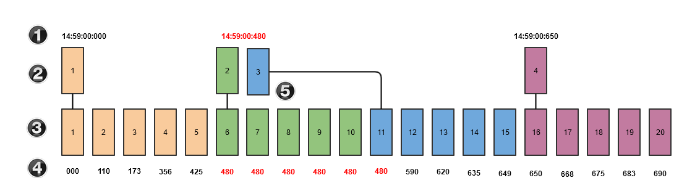
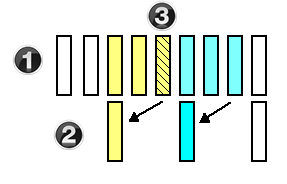
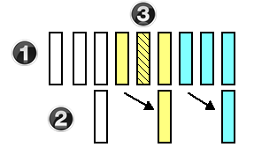

|
<< Click to Display Table of Contents >> Multi-Time Frame & Instruments |


|
Multi-Time Frame & Instruments
|
<< Click to Display Table of Contents >> Multi-Time Frame & Instruments |
|
NinjaScript supports multiple time frames and instruments in a single script. This is possible because you can add additional Bars objects to indicators or strategies, in addition to the primary Bars object to which they are applied. A Bars object represents all of the bars of data on a chart. For example, if you had a MSFT 1 minute chart with 200 bars on it, the 200 bars represent one Bars object. In addition to adding Bars objects for reference or for use with indicator methods, you can execute trades across all the different instruments in a script. There is extreme flexibility in the NinjaScript model that NinjaTrader uses for multiple-bars scripts, so it is very important that you understand how it all works before you incorporate additional Bars objects in a script. An important fact to understand is that NinjaScript is truly event driven; every Bars object in a script will call the OnBarUpdate() method. The significance of this will become evident throughout this page.
Note: If using OnMarketData(), a subscription will be created on all bars series added in your indicator or strategy strategy (even if the instrument is the same). The market data subscription behavior occurs both in real-time and during TickReplay historical |
It is also important that you understand the following method and properties:
Note: As we move through this section, the term "Primary Bars" will be used and for the purpose of clarification, this will always refer to the first Bars object loaded into a script. For example, if you apply a script on MSFT 1 minute chart, the primary Bars would be MSFT 1 minute data set.
This section is written in sequential fashion. Example code is re-used and built upon from sub section to sub section. |
 Working With Multi-Time Frame Objects
Working With Multi-Time Frame Objects
Data processing sequenceUnderstanding the sequence in which bars series process and the granularity provided by market data vendors is essential for efficient multi-series development. Let’s assume we have two series (primary and secondary) in our script, which is representing the same instrument, yet different intervals. During historical data processing, NinjaTrader updates the two series strictly according to their timestamps, calling the primary bar series of the corresponding timestamps first, and then calling the secondary series.
Shared Timestamps In circumstances where multiple bars share the same exact timestamps, your primary bars series will always be processed first, followed by the secondary bars series (regardless of the period value used). Consequently, if you were looking to obtain a value from the secondary bars series, it would ONLY be available after the primary series has been processed for the same timestamps. For example, consider a news event or a fast moving market with an influx of ticks (session begin/session end). This activity will yield a wider range of bars than usual and the probability of those bars sharing the same timestamps increases. If such a succession of bars with the same timestamps is processed, the primary bars would be processed first and then the secondary bars during this period.
Let’s look at an illustration of how the multi-time frame bar processing sequence can be understood. Assume our primary series is a 5-tick bar series, and our secondary series is a 1-tick bar series. The time of day is near the session close, so a rapid sequence of bars is generated.
In the figure below, the 1st group of bars (colored orange), and the 4th group of bars (colored purple) process in an exact logical sequence (i.e., a single primary bar update, followed by five secondary series updates). This is because each bar in these groups have unique timestamps and NinjaTrader can synchronize those bars logically in the exact time sequence each series updated. However, all of the bars marked with red text share the same exact timestamps down to the millisecond (14:59:00:480). Since there were six ticks in sequence with the shared timestamps, this range of ticks expands two of the primary bars (colored green and blue). As a result, the primary bar #3 appears to update earlier when compared to the secondary series. In reality, both bars series are incrementing in their exact sequence according to the timestamps of each series.
 Figure 1. Bar processing with shared timestamps 1.Timestamps of primary series (hour, minute, second, millisecond) 2.Current bars numbered in series representing 5-tick primary series 3.Current bars numbered in series representing 1-tick secondary series 4.Millisecond time stamps of secondary series 5.A sequence of bars sharing the same time stamps |
 Adding Additional Bars Objects to NinjaScript
Adding Additional Bars Objects to NinjaScript
Additional Bars are added to a script via the AddDataSeries() method in the OnStateChange() method when the State has reached State.Configure. When a Bars object is added to a script, it is also added to the BarsArray array. BarsArray functions like a container in the script that holds all Bars objects added to the script. As a Bars object is added to the script, it's added to BarsArray and given an index number so we can retrieve this Bars object later.
For the purpose of demonstration, let's assume that a MSFT 1 minute bar is our primary Bars object (set when the script is applied to a 1 minute MSFT chart) and that the OnStateChange() method is adding a 3 minute Bars object of MSFT, then adding a 1 minute Bars object of AAPL, for a total of 3 unique Bars objects.
|
Series<T> ObjectsSeries<T> is the base class for PriceSeries, TimeSeries, and VolumeSeries. Rather than using one of these pre-defined derived classes, you can create your own Series<T> collection to hold any Type that you choose. The advantage that Series<T> has over other collections is that it can be quickly initialized to contain a number of index slots equal to the number of bars in one of the Bars objects on the chart, with each index slot corresponding to a specific bar. Initializing a Series<T> with BarsArrayA Series<T> can be constructed by passing in a specific index of BarsArray. Initializing a Series<T> this way produces an empty Series<T> container holding the same number of index slots as the BarsArray that was passed in as an argument. For example, assuming that BarsArray[1] holds 500 bars, the code below will create an empty Series<T> with 500 index slots:
This method of initializing a Series<T> can be especially useful when you wish to store user-defined information related to each bar in a Bars object on the chart. This process ensures that index slots are available for every bar on the chart right away.
Initializing a Series<T> with an Indicator MethodPassing in an indicator method as an argument when instantiating a Series<T> object provides an alternative to the process outlined above. Because indicator methods already contain Series objects synced to the bars on a chart, they can be used to inform the constructor of Series<T> of how many index slots to create.
|
Understanding how multi-time frame bars are processed and which OHLCV data is referenced is critical.
Figure 1 below demonstrates the concept of bar processing on historical data or in real-time when the Calculate property is set to Calculate.OnBarClose. The 1 minute bars in yellow will only know the OHLCV of the 3 minute bar in yellow. The 1 minute bars in cyan will only know the OHLCV data of the 3 minute bar in cyan. Take a look at "Bar #5," which is the fifth one minute bar. If you wanted to know the current high value for the 3-minute time frame, you would get the value of the first 3 minute bar since this is the last "closed" bar. The second 3 minute bar (cyan) would not be known at that time.
 Figure 1. Bar processing on historical data using Calculate.OnBarClose 1.Primary 1-minute bar series 2.Secondary 3-minute bar series 3.Bar #5
Contrast the above image and concept with the image below, which demonstrates bar processing in real-time when the Calculate property is set to Calculate.OnEachTick (tick by tick processing) or Calculate.OnPriceChange (processing by change in price). The 1 minute bars in yellow will know the current OHLCV of the 3 minute bar in yellow (second 3 minute bar) which is still in formation and has not yet closed.
 Figure 2. Bar processing in real-time using Calculate.OnEachTick or Calculate.OnPriceChange 1.Primary 1-minute bar series 2.Secondary 3-minute bar series 3.Bar #5
If you have a multi-time frame script in real-time, and it is processing tick by tick instead of on the close of each bar, understand that the OHLCV data you access in real-time is different than on historical data.
Below is another example to illustrate this point:
Your script has complex logic that changes the bar color on the chart. You are running tick by tick, as per the above "Figure 2" image, the 5th 1 minute bar is looking at OHLCV data from the second 3 minute bar. Your script changes the fifth 1 minute bar color to green. In the future, you reload your script into the chart and the fifth 1 minute bar is now a historical bar. As per Figure 1 above, the fifth 1 minute bar now references the OHLCV data of the first 3 minute bar (instead of the 2nd 3 minute bar as per Figure 2) and as a result, your script logic condition for coloring the bar green is no longer valid. The result is that now your chart looks different.
Special considerations for session boundaries :
Bars are not considered closed until the first tick of the following bar comes in (see also "True Event Driven OnBarUpdate" below). As a consequence, if the above series 2 cyan bar represents the final bar of a session, and this bar is referenced from the matching series 1 cyan bar, or anywhere after that, the data from the close of the bar (the beginning of the next session) will be referenced. If you plan on using multiple session templates, you will need to handle the final bar of a trading day case explicitly (for example, using a Session Iterator and the PriorDayOHLC) if you would like to reference data from the end of the previous trading day instead of the beginning of the current trading day. |
 Using Bars Objects as Input to Indicator Methods
Using Bars Objects as Input to Indicator Methods
In the sub-section above, the concept of index values was introduced. This is a critical concept to understand since it is used consistently when working with multi-Bars script.
Let's demonstrate this concept:
Carrying on from the example above, our primary Bars is set from a MSFT 1 minute chart
MSFT 1 minute Bars is given an index value of 0 in BarsArray
In the OnStateChange() method we added a MSFT 3 minute Bars object and an AAPL 1 minute Bars object to the script
MSFT 3 minute Bars is given an index value of 1 in BarsArray AAPL 1 minute Bars is given an index value of 2 in BarsArray
Incremental index values are given to Bars objects as they are added to a script. If there are 10 Bars objects in a script, then you will have index values ranging from 0 to 9.
Our script now has 3 Bars objects in the container BarsArray. From this point forward, we can ask this container to give us the Bars object we want to work with by providing the index value. The syntax for this is:
BarsArray[index]
This allows us to get the correct Bars object and use it as input for an indicator method. For example:
ADX(14)[0] > 30 && ADX(BarsArray[2], 14)[0] > 30
The above expression in English would translate to:
If the 14 period ADX of MSFT 1 minute is greater than 30 and the 14 period ADX of AAPL 1 minute is greater than 30
Before we can apply this concept, we need to ensure that our Bars objects actually contain bars that we can use to run calculations. This can be done by checking the CurrentBars array, which returns the number of the current bar in each Bars object. Using this in conjunction with BarsRequiredToPlot will ensure each Bars object has sufficient data before we begin processing.
Putting it all together now, the following example checks if the current CCI value for all Bars objects is above 200. You will notice that BarsInProgress is used. This is to check which Bars object is calling the OnBarUpdate() method. More on this later in this section.
|
 True Event Driven OnBarUpdate() Method
True Event Driven OnBarUpdate() Method
Since a NinjaScript script is truly event driven, the OnBarUpdate() method is called for every bar update event for each Bars object added to the script. This model maximizes flexibility. For example, you could have multiple trading systems combined into one strategy, each dependent on one another. For example, you could have a 1 minute MSFT Bars object and a 1 minute AAPL Bars object, process different trading rules on each Bars object and check to see if MSFT is long when AAPL trading logic is being processed.
The BarsInProgress property is used to identify which Bars object is calling the OnBarUpdate() method. This allows you to filter out the events that you are looking for.
Continuing our example above, let's take a closer look at what is happening. Remember, we have three Bars objects working in our script, a primary Bars MSFT 1 minute, an MSFT 3 minute, and an AAPL 1 minute.
What is important to understand in the above sample code is that we have "if" branches that check to see what Bars object is calling the OnBarUpdate() method in order to process relevant trading logic. If we only wanted to process the events from the primary Bars we could add the following condition at the top of the OnBarUpdate() method:
if (BarsInProgress != 0)
What is also important to understand is the concept of context. When the OnBarUpdate() method is called, it will be called within the context of the calling Bars object. This means that if the primary Bars triggers the OnBarUpdate() method, all indicator methods and price data will point to that Bars object's data. Notice how the statement "if (Close[0] > Open[0]" exists under each "if" branch in the code sample above. The values returned by Close[0] and Open[0] will be the close and open price values for the calling Bars object. So when the BarsInProgress == 0 (primary Bars) the close value returned is the close price of the MSFT 1 minute bar. When the BarsInProgress == 1 the close value returned is the close price of the MSFT 3 minute Bars object.
|
 Accessing the Price Data in a Multi-Bars NinjaScript
Accessing the Price Data in a Multi-Bars NinjaScript
As you probably know already, you can access the current bar's closing price with the following statement:
Close[0];
You can also access price data such as the close price of other Bars objects at any time. This is accomplished by accessing the Opens, Highs, Lows, Closes, Volumes, Medians, Typicals and Times series by index value. These properties hold collections (containers) that hold their named values for all Bars objects in a script.
Continuing with our example code above, if you wanted to access the high price of the MSFT 3 minute Bars object at index 1 you would write:
The following example demonstrates various ways to access price data.
|
 Entering, Exiting and Retrieving Position Information
Entering, Exiting and Retrieving Position Information
This section is relevant for NinjaScript strategies only. Entry and Exit methods are executed within the BarsInProgress context. Let's demonstrate with an example:
The Position property always references the position of the instrument of the current context. If the BarsInProgress is equal to 2 (AAPL 1 minute Bars), Position would refer to the position being held for AAPL. The Positions property holds a collection of Position objects for each instrument in a strategy. Note that there is a critical difference here. Throughout this entire section we have been dealing with Bars objects. Although in our sample we have three Bars objects (MSFT 1 and 3 min and AAPL 1 min) we only have two instruments in the strategy.
MSFT position is given an index value of 0
In the example below, when the OnBarUpdate() method is called for the primary Bars we also check if the position held for AAPL is NOT flat and then enter a long position in MSFT. The net result of this strategy is that a long position is entered for AAPL, and then once AAPL is long, we go long MSFT.
|